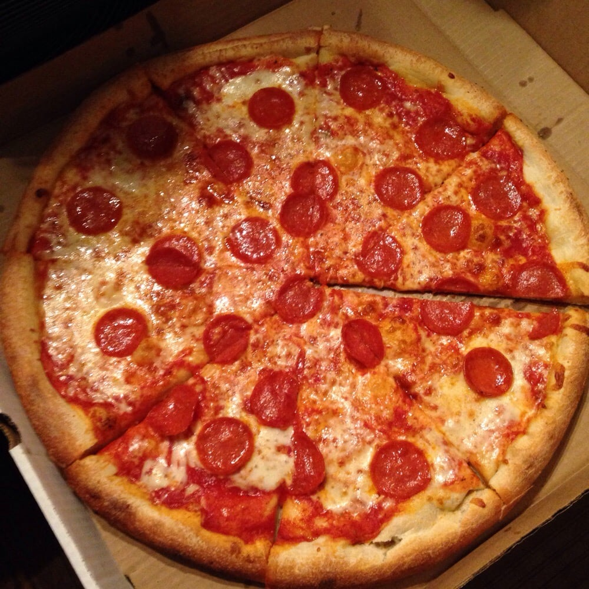
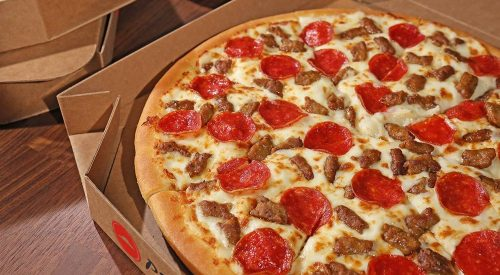
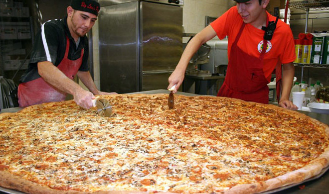

The origin of the word Pizza is uncertain. The food was invented in Naples about 200 years ago. It is the name for a special type of flatbread, made with special dough. The pizza enjoyed a second birth as it was taken to the United States in the later 19th century. Flatbreads like the focaccia from Liguria have been known for a very long time. Pizzas need to be baked at temperatures of 200–250 °C. Hardly any household oven could reach such temperatures at the time. Because of this, the pizza was made at home, and then given to the town bakery to bake. In June 1889, the Neapolitan chef Raffaele Esposito created the "Margherita" in honour of Queen Margherita, and was the first pizza to include cheese. Pizza was brought to the United States with Italian immigrants in the late nineteenth century; and first appeared in areas where Italian immigrants concentrated. The country's first pizzeria, Lombardi's, opened in 1905. Veterans returning from World War II's Italian Campaign were a ready market for pizza. Since then pizza consumption has exploded in the U.S. Pizza chains such as Domino's, Pizza Hut, and Papa John's, have outlets all over the nation. Thirteen percent of the U.S. population eats pizza on any given day.


